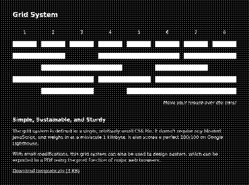

Resources for a Resource-Saving Internet
2023-05-18
A while back, I stumbled upon korayer's RE;FERI. This site outlines a number of resources about creating lightweight websites, and most notably includes the template for a CSS grid system, allowing one to create websites with layouts more complex than just a linear text document, but without any bloated JavaScript. I was intrigued by the possibilities, but didn't want to continue having to view the site in Google Translate, so I created my own fork.

Translation
I don't know German (the language the original version is written in). As a result, I relied on a combination of Google Translate, as well as my own intuition on the message being conveyed. This has resulted in what I feel is a reasonable interpretation, but please do open an issue if there's anything I've grossly misinterpreted.
Dark Mode
One aspect of the original RE;FERI that bugged me was the lack of a dark mode. In 2023, every website has a dark version, and I knew from my work on this site that it's incredibly easy to add a dark mode to a simple HTML site. As such, my version of RE;FERI supports a dark mode. This is achieved using just the <meta name="color-scheme" content="dark light"> tag to indicate to the browser that a dark mode is available, and then some mode-specific CSS styling for links, highlights, and some other custom elements to ensure consistent readability across modes.
Next Steps
I think this system, and having a version in English with a dark mode, will allow me to easily create more pages for I Need More Coffee, as well as other personal projects, that preserve the simple, lightweight, and quick-to-load nature of this site. For starters, I plan on using it for the verification page I discussed in a previous post. I'm excited to see what I, and others, can create with this.